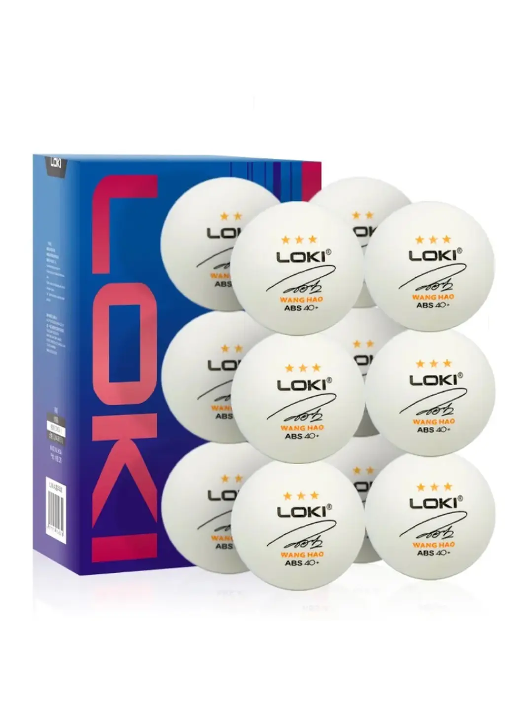

Set 12 Pelotas Tenis de Mesa Pro 3 Estrellas Abs 40+
$7.990
Descripción del Producto:
Beneficios del producto:
Certificación 3 estrellas para un rendimiento profesional
Fabricadas en plástico ABS para mayor durabilidad
Excelente redondez y rebote consistente para un juego preciso
Cumplen con el estándar 40+ para una experiencia profesional
Perfectas para entrenamientos intensivos y competiciones
Peso y espesor controlados para un rendimiento superior
🎾 Mejora tu precisión y velocidad con pelotas de calidad profesional para cada punto